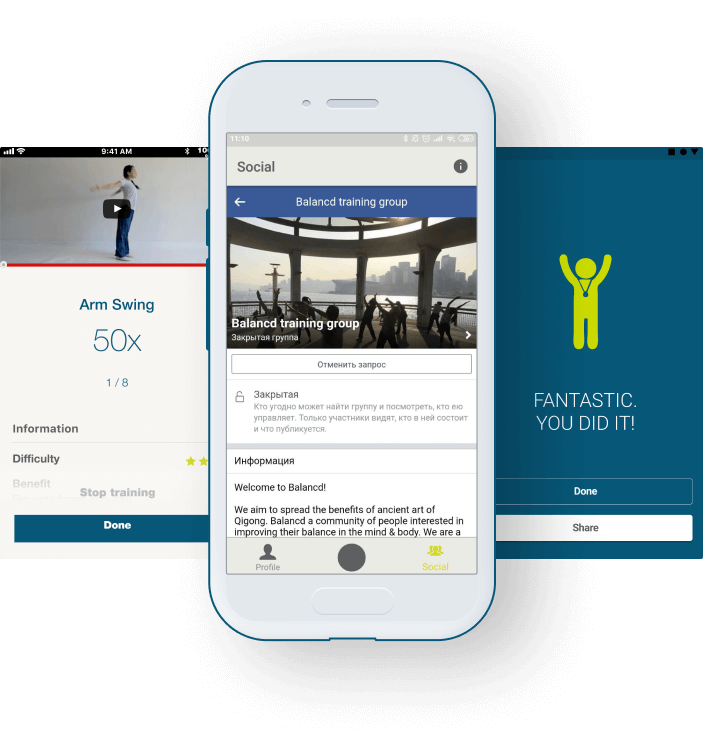
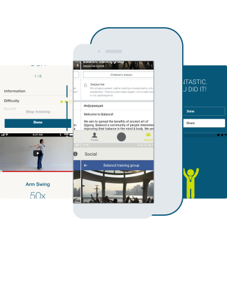

Индивидуальная программа тренировок для пожилых людей
Приложение для китайского стартапа. Удобное для пожилого пользователя фитнес приложение для занятий
фитнесом дома(китайская гимнастика Тайцзи и Цигун) с индивидуальной программой тренировок, видеоуроками
и фитнес тестами для отслеживания своего прогресса.
Функционал
Пройти тестирование
Выбрать программу тренировки
Уведомление о тренировке
Поделиться в Facebook
Facebook webview


Платформы
Система состоит из двух нативных приложений (iOS, Android) и веб-версии для администратора, где
осуществляется управление упражнениями и курсами тренировок и отображается статистика по прогрессу
пользователей
USER FLOW
Пользователь заполняет свои персональные данные (пол, возраст, местоположение, образ жизни и
количество тренировок в неделю).
Затем пользователь проходит тестирование, чтобы приложение могло подобрать для него лучшую систему
тренировок. Есть два режима упражнений (Шаолинь и Бадьяндзинь) и разные уровни сложного для каждого
из
них.
Упражнения включают видеоуроки и текстовое описание.
После тренировки пользователю предлагается оставить свой фидбек о степени сложности упражнений.
Пользователь также видит свою статистику в виде графика.Теперь пользователь может поделиться своими
успехами
в Facebook и общаться в группе социальной сети не покидая интерфейса приложения Balancd.
Решение
Проектом занималась команда из 7 человек (руководитель проекта, дизайнер, Android, iOS, frontend и backend
разработчики, инженер по качеству). Android версия приложения создана на Kotlin (язык, объявленный Google
одним из самых приоритетным языком программирования для Android весной 2019). Одной из особенностей проекта
является то, что целевая аудитория - пожилые люди, так что удобство и простота использования приложения были
для нас ключевым моментом.
Android: Kotlin iOS: Swift Web: ReactJS Server:
Express.js
Challenges
Алгоритм распределения тренировок довольно непростой, так как существует жёсткая схема распределения
упражнений по уровням сложностей на основе опроса пользователей и их фидбеку после упражнений. Также мы
приобрели опыт в локализации приложений на китайский (если быть точнее, на его кантонский диалект, и заодно
узнали, что такой существует).
Развитие
Приложение тестируется пилотной группой в Испании, Норвегии и Гонконге. Заказчик презентовала проект в
Европейской ассоциации Шаолинь и для руководителей Неправительственных организаций Гонконга и получила
поддержку. В ближайшее время свои занятия с приложением Balancd начнут группы пожилых людей во всех районах
Гонконга.
Отзыв
Сара Чунг, владелец приложений Balancd:
“Citronium активно взаимодействует со всеми заинтересованными сторонами. Хорошо организованная
работа
позволяет им глубоко погружаться в процесс разработки и предоставлять важную техническую
консультацию,
когда
она особенно необходима. Citronium нанимает высококвалифицированных специалистов, с которыми приятно
работать. Как и в любых проектах, людям требуется время, чтобы узнать друг друга, но наши команды
быстро
притёрлись и начали работать сообща. Благодаря выделенным руководителям проектов, нам удалось
продумать
всё
до мелочей и собрать реальный фидбек пользователей. Это здорово, что их команда находит и устраняет
все
причины недостатков. Когда необходимо, они дают рекомендации по продукту и предлагают креативные
решения”.